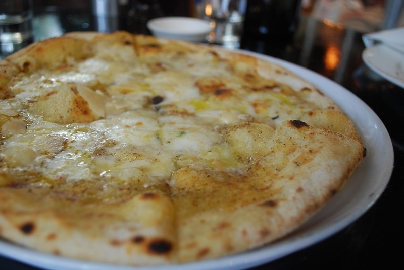

the-net-pizza
Pizza speciale fObiA
Una pizza... da paura! Un olezzo che temeranno anche i tuoi vicini
Ingredienti
Ricetta
- Versare la farina in una ciotola.
- Sbriciolare il lievito all'interno e versare un po' della dose di acqua.
- Mescolare con un mestolo di legno e aggiungere lentamente l'acqua.
- Continuare sempre a mescolare e aggiungere anche il sale.
- Unire l'acqua rimasta sino ad ottenere un composto omogeneo
e trasferire l’impasto sul piano da lavoro e lavorarlo fino a che non sarà liscio.
- Lasciarlo riposare sul piano di lavoro per una decina di minuti e dare una piccola piega.
- Dare la forma di una sfera e trasferire l'impasto in una
ciotola coperto con pellicola trasparente.
- Lasciare lievitare fino a raddoppiare il volume.
- Trasferire l'impasto sul piano da lavoro e farlo girare con le mani fino
ad ottenere una sfera liscia e regolare.
- Trasferire il panetto in una cassetta per pizza precedentemente unta e coprire con il coperchio.
- Lasciare riposare per altri 30 minuti prima di poter tirare l’impasto
per la pizza e condirlo con la mozzarella e i quattro formaggi.
- Infornare e, a cottura ultimata, aggiungere un filo d'olio e pepe nero q.b.
Valori Nutrizionali
Tabella
| Tipologia |
Quantità |
RDA |
| Energia |
1700Kcal |
75% |
| Carboidrati |
250g |
40% |
| Zuccheri |
100g |
10% |
| Proteine |
100g |
10% |
| Grassi |
250g |
80% |
| di cui Saturi |
150g |
100% |
| Voglia di vivere |
21g |
0% |
| Puzza |
n.d. |
n.c. |
Torna alla pagina precedente